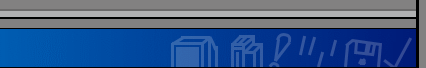

|  |
| |
Hello, and thank you for stopping by! This is where you can find useful information on my projects, how to modify certain systems, and even a blog where I post achievements and thoughts. I'm usually active on other sites too: -Twitter: @k24a1_-Discord: k24a1#0973 -MacRumors, 68kMLA, TinkerDifferent Forums: k24a1 -YouTube: k24a1 under "channels" -Email: k24a1@hotmail.com This page just acts like an information resource. I host files, do writeups on my projects, and post random stuff on my blog. Click on one of the boxes on the left side to explore the website!Like what I do? Consider tipping me on Ko-Fi! |